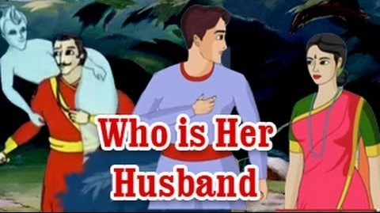

|
As Vikramaditya put Betal on their shoulders from a tree Betal told another story that In Ujjain town a prince was great in every manner including his looks. Every lady in his town wanted to marry him but he doesn’t find them attractive and well-mannered. One day he saw a lady and thought this is the right one. He went to goddess Kali’s temple and said that if he would not marry her he will cut his head in front of the goddess Kali and he would not eat anything too. One of his friends came out to know this and started searching for the lady. He soon found her and arranged their marriage. Everything was going well but at a night a person in the prince’s dream said that Maa Kaali wants him to present his head to Maa Kaali. He thought it was the goddess Kali’s order and he cut his head in front of the Goddess. |
|  |
|
His wife kept searching for him the whole night but couldn’t find the prince. She then sent the messenger for the prince’s friend and requested him to help her in finding the Prince. Both went to search for him. They found him dead in the temple. Then the friend thought that people will think that he has killed a prince (His own friend) because of the lady. In this fear, he also killed himself. The princess cried ahead of goddess Kali and requested her to do something. Maa Kaali appeared and got convinced to join their heads again. Unfortunately, in hurry, both men’s necks were exchanged. “So Rajan, tell me who would be her husband?” Betal asked. The king answered. “It is simple. A man has an identity by face so the body with the prince’s face should be her husband.” “You are always right Rajan.” said the Betal and flew away. |